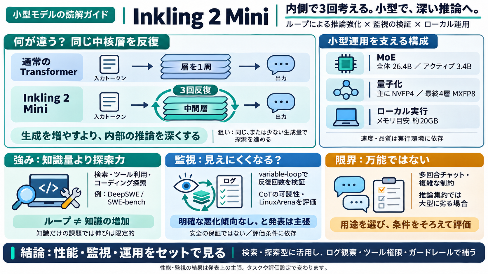

Inkling 2 Small by Thinking Machines Lab: 594B MoE, 1M | AI/TLDR
The model launched on Tinker, Thinking Machines' platform, with closed weights. On November 12, 2026 the lab published t…

The model launched on Tinker, Thinking Machines' platform, with closed weights. On November 12, 2026 the lab published t…
to maintain a 5:3 sampler:trainer ratio despite training at long contexts. Weight transfer is done via GPUDirectRDMA at …
| Specification | Technical Detail | ---| | Developer | Thinking Machines Lab, Inc. | | Release Date | November 5, 2026 …
The model was pretrained, midtrained and post-trained in NVFP4, so this is the native precision for the model. We recomm…
The BF16 checkpoint requires a GPU cluster with at least 600 GB of aggregated VRAM. This can be met with either of the f…